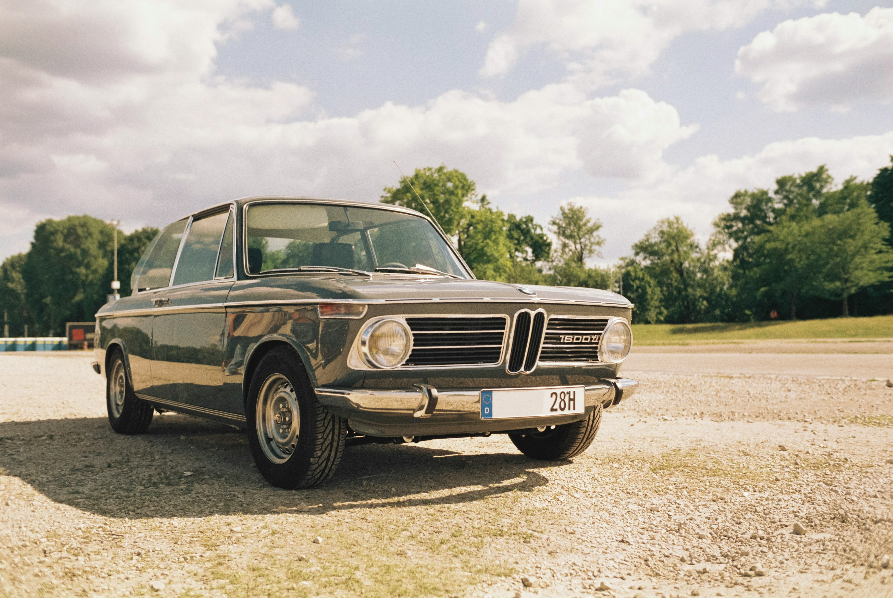

PNG Image File
The car is an older model with classic design features, such as round headlights and a boxy shape, giving it a timeless, elegant look. The sunlight shines off its smooth surface, adding to the sense of nostalgia and style. This image is an example of a PNG file. It is commonly used for photographs. I have chosen this image because I wanted to showcase the beauty of this old and precious BMW; this is not what comes to mind when one thinks of a BMW. A sporty and flashy car comes to mind, but these antique BMWs are very elegant and precious and represent BMW as well.
Source: Image Source